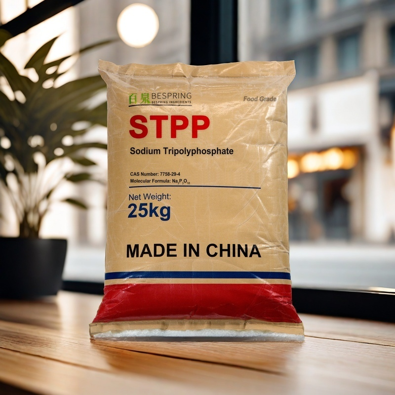
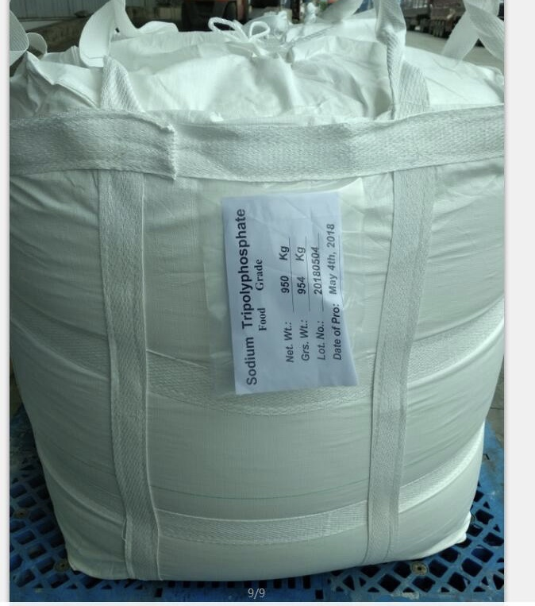
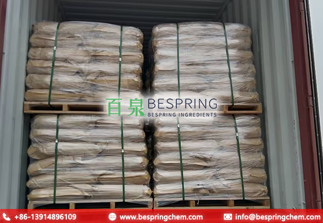

Moisture management
Can support protein water binding in suitable meat, poultry and seafood recipes. Assess cooking loss or thaw drip in the actual process.
Food phosphate · INS 451(i) · STPP

Product image · confirm grade and packaging when ordering
Include required standard, quantity, pallet preference, destination and application for an efficient review.
Reference specificationCommercial limits and test-method requirements
25 kg packagingKraft paper outer bag with inner PE bag
24-month shelf lifeFrom manufacturing date under stated storage
Container optionsWith or without pallets
Product overview
Sodium tripolyphosphate (STPP), also called pentasodium triphosphate, is the pentasodium salt of triphosphoric acid, identified as CAS 7758-29-4 and INS 451(i). Its anhydrous formula is Na5P3O10. The JECFA monograph distinguishes anhydrous STPP from its hexahydrate; the assay and phosphorus limits on this page refer to the anhydrous material.
For procurement, “food grade” should never be treated as the whole specification. Buyers should also confirm assay, P2O5, insoluble matter, contaminant limits, particle form, test methods and destination-market documentation.
Formulation value
STPP functions depend on the food system. The FDA substance record lists emulsifier, pH-control, sequestrant and texturizer roles; actual performance depends on the recipe, raw material, process and use level.
Can support protein water binding in suitable meat, poultry and seafood recipes. Assess cooking loss or thaw drip in the actual process.
Can modify texture and help control pH. Check finished-product pH and sensory quality rather than assuming a fixed buffering effect.
Can support protein dispersion and fat–water emulsion stability in suitable formulations; it is not a universal emulsifier for every food.
Complexes certain metal ions, including calcium and magnesium. Water hardness and other ingredients influence this sequestration function.
Typical application areas
The intended food category, dosage and declaration must be reviewed against the regulations of the manufacturing and destination markets.
STPP is considered in validated brines, marinades and processed protein systems where moisture retention, texture and process yield are important.
For STPP in meat processing, review our brine and process considerations. For fish and shellfish, use the seafood phosphate selection guide.
STPP may be considered as part of an emulsifying-salt or phosphate system in suitable dairy and formulated-food applications. Select the phosphate combination for the specific protein, mineral balance and heating process.
Product specification
The following limits are commercial references for the offered grade. They are not a universal definition of food grade STPP; the signed specification, agreed test methods and batch COA govern an order.
Swipe or use the keyboard to read all columns
| Test item | Specification | Unit / basis |
|---|---|---|
| Assay (Na5P3O10) | ≥ 85.0 | % |
| P2O5 | 56.0–58.0 | % |
| Water-insoluble matter | ≤ 0.1 | % |
| Fluoride | ≤ 50 | ppm |
| Arsenic | ≤ 3 | ppm |
| Heavy metals | ≤ 10 | ppm |
| Lead | ≤ 4 | ppm |
| Appearance | White granules or powder | Visual |
Units and test basis: For mass-based reporting, 1 ppm = 1 mg/kg. Confirm fluoride is reported as fluorine when comparing standards. Analytical methods and the reporting basis for “heavy metals” need to be defined. Agree methods, sampling and acceptance criteria in a signed specification; use the batch COA to check actual results.
Standard comparison: The commercial fluoride limit of ≤ 50 ppm equals the ≤ 50 mg/kg limit in the cited JECFA monograph. The EU E451(i) specification instead sets ≤ 10 mg/kg, expressed as fluorine: the listed commercial limit is less stringent. Matching selected JECFA limits does not establish full conformance; identification, loss on drying, higher polyphosphates and prescribed methods also require review.
JECFA identifies STPP as INS 451(i), with sequestrant and texturizer functions. In the EU it is designated E451(i). These identifiers describe the additive; they do not establish that a supplied grade meets a particular standard or is permitted in every food. Check the applicable food category, use limit, labeling rules and complete purity specification for the destination market. The FDA inventory links to U.S. regulatory provisions and does not certify Bespring’s product.
Supplier qualification
A useful quotation should identify the exact grade and acceptance criteria—not only the abbreviation “STPP.”
Confirm sodium tripolyphosphate, CAS 7758-29-4, INS/E451(i), the required food standard and intended destination market.
Align assay, P2O5, insoluble matter, contaminants, units, sampling and analytical methods.
State powder or granular preference, application and recipe conditions. If handling or hydration rate matters, also define particle size, bulk density and phase-composition requirements.
Request a current signed specification, TDS, SDS and a representative COA for qualification; require a COA for the supplied batch. Confirm packaging, pallets, quantity, destination and any certificate scope.
Grade boundary: Food grade and technical or detergent grades should not be treated as interchangeable. Qualify the grade, facility documentation and intended legal use before approval.
Packing & logistics
Final loading depends on container limits, route, pallet dimensions and shipping requirements.


Storage & shelf life
Related selection resources
Use these pages to compare adjacent ingredients and narrow the application before supplier qualification.
Buyer questions
It is used in permitted food applications where phosphate functionality is needed, including selected meat, poultry, seafood, dairy and processed-food formulations. The precise function and use level depend on the recipe, process and local regulations.
STPP is identified as INS 451(i) and, in the EU, E451(i), pentasodium triphosphate. An additive number identifies the substance; permitted foods, use limits and purity requirements must be checked separately.
No. This page presents the commercial reference limits. A certificate of analysis reports results for a particular batch and should be checked against the agreed purchase specification.
The listed fluoride limit, ≤ 50 ppm, matches the cited JECFA limit of ≤ 50 mg/kg. However, this abbreviated commercial table cannot establish full JECFA conformance. Review the complete signed specification, prescribed methods and batch COA. EU E451(i) has a stricter fluoride limit of ≤ 10 mg/kg. See the official sources beside the specification table.
No. The same chemical name does not establish suitability for food use. Confirm the offered grade, specification, supporting documentation, manufacturing controls and regulatory suitability for the intended market.
Standard packing is a net 25 kg kraft paper outer bag with an inner PE bag. Reference loading is 23 MT per 20GP without pallets or 18 MT with pallets, subject to shipment confirmation.
Provide the required food standard, powder or granular preference, quantity, packaging, pallet requirement, destination port, application and delivery target.
Specify powder or granules and your brine concentration, water hardness, mixing temperature and process. Compare dissolution and brine clarity under those conditions, then evaluate uptake, purge, cooking loss and texture in a trial. If needed, agree particle-size and phase-composition requirements before ordering.
Ask the sales team for the specification, TDS, SDS, applicable quality documents and sample availability. State your application and destination so the relevant documents can be reviewed.
Start a sourcing conversation
Request a quotation, current technical documents or sample availability. Include the details below so our team can match the grade and prepare the shipping proposal.
Tell us your grade and destination market so we can confirm which documents are available for your order.
An external reference is not a batch certificate or a Bespring product specification.